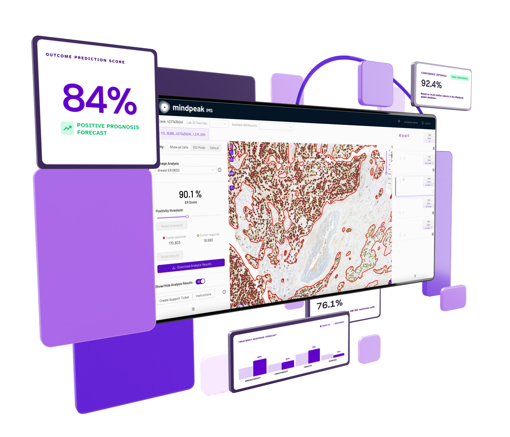
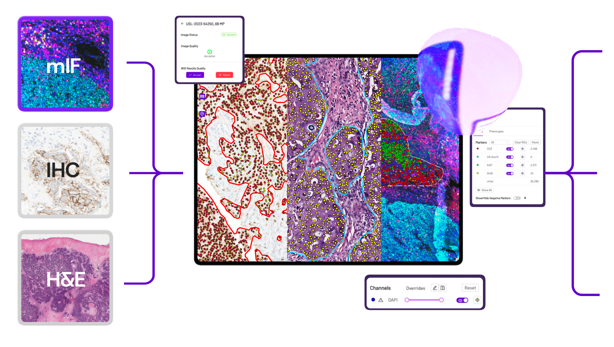

peakPredict turns routine histopathology slides into forward-looking clinical intelligence — predicting therapy response, mutation status, and recurrence risk before treatment begins.

Cancer diagnostics have mastered classification — but clinicians still face the hardest questions.
Predicting which patient will truly respond to a given therapy remains one of the central unsolved challenges in oncology care.
"Which patient will truly respond to this therapy?"Standard-of-care treatment benefits many — but a subset of patients relapse early, and identifying them proactively changes outcomes.
"Who is at risk of early relapse, despite standard-of-care?"Genomic sequencing can reveal mutation status — but it is slow, costly, and not always available at the point of clinical decision.
"Which molecular alterations does this tumor carry — without waiting for sequencing?"peakPredict answers all of these questions directly from routine H&E and IHC tissue slides — the same slides already generated in the pathology workflow. No additional tissue. No costly sequencing. No delay.
By integrating histopathology, clinical, and molecular data, peakPredict delivers accurate predictions of patient outcomes, supporting more informed treatment decisions across the oncology care pathway. Built on Mindpeak's patented peakFrontier model, it extracts deep spatial, morphological, and cellular features invisible to the human eye and translates them into quantitative predictions that guide real treatment decisions.

Biomarker complex scoring with continuous or categorical outputs tailored to your clinical or trial endpoint — not just binary calls.
Detect spatial patterns invisible to the human eye across the full whole-slide image, unlocking entirely new biomarker classes.
Demonstrate earlier treatment efficacy by enriching your clinical trial with responders, identified pre-enrollment from existing slides.
The peakFrontier model operates at sub-cellular resolution, capturing morphological and spatial features missed by conventional AI methods.
Validated across scanner types, staining protocols, and institutions — delivering consistent, reproducible predictions at scale.
Built with rich granular annotations across mIF, IHC, and H&E modalities — applicable across multiple tumor types and indications.
Lengthy enrollment and heterogeneous patient populations in clinical trials can mask responders with non-responders, reducing signal-to-noise and trial success. peakPredict BRCA was used to automatically identify patients with BRCA1/2 mutations within mixed populations for pre-trial eligibility screening.
Presented at ASCO 2026. [VERIFY: confirm partner co-attribution before publishing]
Triple-negative breast cancer is highly aggressive, and while immunotherapy offers new options, only a subset of patients responds. peakPredict was developed as an AI-supported predictive biomarker for immunotherapy response — pre-screening patients prior to trial enrollment to guide treatment selection and avoid unnecessary therapy.
Erber R, Kochanke A, Calcagliola D, Pöpper M, Youssef A, Hamzeh A, et al. SUPERß – AI SUPported Evaluation of Immunotherapy Response in Early Triple Negative Breast Cancer. Poster presented at: European Congress of Pathology (ECP 2025); 2025 Aug 25–27; Florence, Italy. Poster ID: PS-61-899
Standard H&E or IHC whole-slide images (WSIs) are submitted — the same slides already acquired during routine pathology workflow. No additional tissue preparation or specialized staining required.
Mindpeak's patented Pathology Frontier Model processes each WSI, extracting deep spatial, morphological, and cellular features invisible to the human eye across mIF, IHC, and H&E modalities.
Extracted features are passed into validated predictive models. Spatial patterns, immune infiltration dynamics, morphological class distributions, and optional clinical or molecular data are integrated to generate a composite prediction score.
Results are returned as continuous risk scores or categorical predictions with AI explainability (XAI), highlighting the specific tissue features most driving each prediction.
Pathologists and oncologists receive actionable, reproducible predictive insights — ready for tumor board review, patient stratification, or clinical trial enrollment decisions.
Ready to turn tissue into prediction and develop the biomarkers of the future with us? Join the clinicians, researchers, and pharma teams already working with Mindpeak to define the next standard of precision oncology.
peakPredict works with standard H&E and IHC whole-slide images — the same slides already generated during routine pathology workflows. No additional tissue preparation, specialized staining, or extra testing is required.
No. peakPredict extracts all predictions directly from routine histopathology slides. It is designed to deliver actionable insights — including mutation status predictions — without the cost, time, or tissue requirements of genomic sequencing.
peakPredict is built on the pan-tumor peakFrontier foundation model, trained with rich annotations across mIF, IHC, and H&E modalities. Published validations include breast cancer (TNBC IO-response), BRCA1/2 mutation status prediction, and malignant melanoma immunotherapy response prediction.
peakPredict is designed for seamless integration into existing digital pathology workflows. Slides are submitted as standard WSIs and predictions are returned as structured outputs — continuous scores or categorical classifications — compatible with standard reporting and tumor board review workflows.
peakFrontier is Mindpeak's patented Pathology Frontier Model — a next-generation AI engine built on proprietary neural architectures and rich, granular annotations across image modalities (mIF, IHC, H&E). It operates at sub-cellular precision and delivers consistent robustness across scanner types, staining protocols, and clinical sites. peakPredict uses peakFrontier as its feature extraction backbone.
Unless otherwise stated, peakPredict is intended for Research Use Only. For questions about clinical deployment or regulatory pathways, please contact Mindpeak directly.